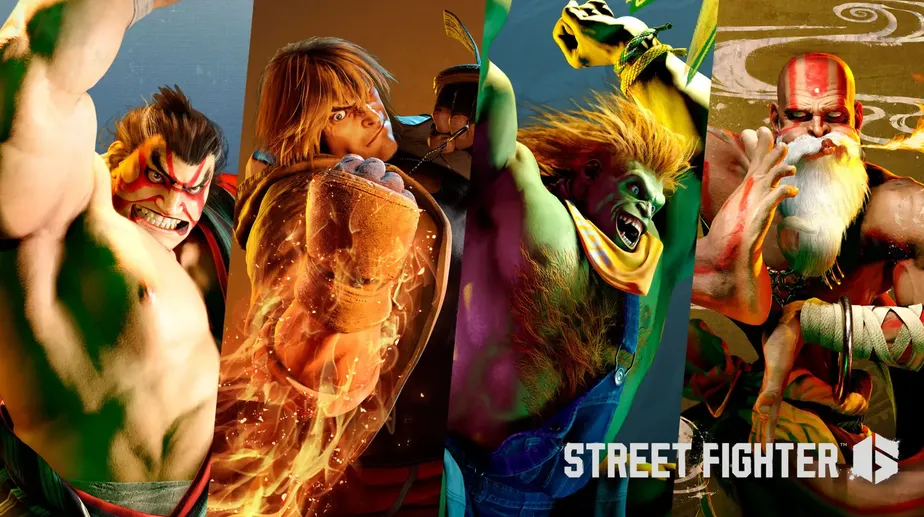

postado em 14/09/2022
Street Fighter 6 foi destaque na Tokyo Game Show 2022, nesta quinta-feira (15), com um novo trailer de gameplay. Entre as novidades anunciadas está a confirmação de Ken, Blanka, Dhalsim e E. Honda como lutadores selecionáveis. O evento também serviu de palco para apresentar mais detalhes dos modos World Tour e Battle Hub, que são considerados dois dos pilares principais da experiência do jogo. Por fim, um Beta fechado acontece de 7 a 10 de outubro no PC, PlayStation 5 (PS5) e Xbox Series X/S, com inscrições já abertas para todos os interessados.
Link do Techtudopostado em 14/09/2022
Em sua participação na Tokyo Game Show 2022, a Square Enix está oferecendo ao público uma demonstração jogável com os primeiros minutos de Crisis Core: Final Fantasy VII. Para aqueles que não podem participar presencialmente do evento, o canal da revista japonesa Famitsu divulgou nesta quinta-feira (15) um vídeo que revela os 13 primeiros minutos de gameplay da versão atualizada do game.
Assista aquiTodos os direitos reservados.